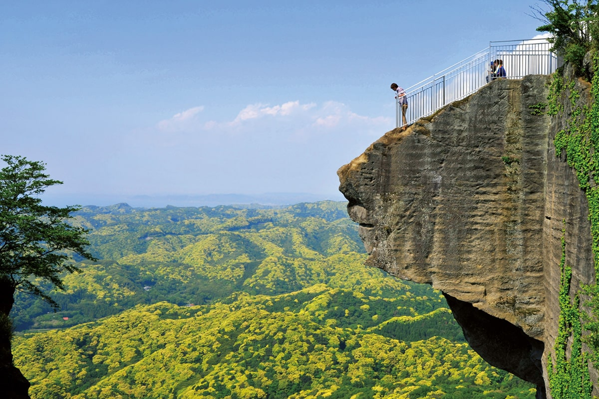
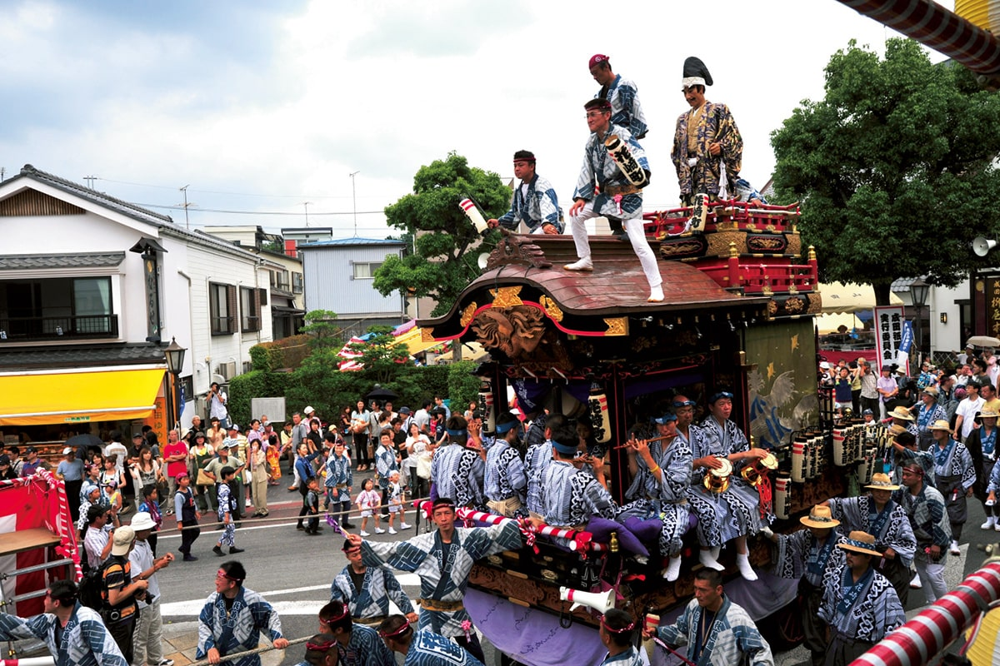
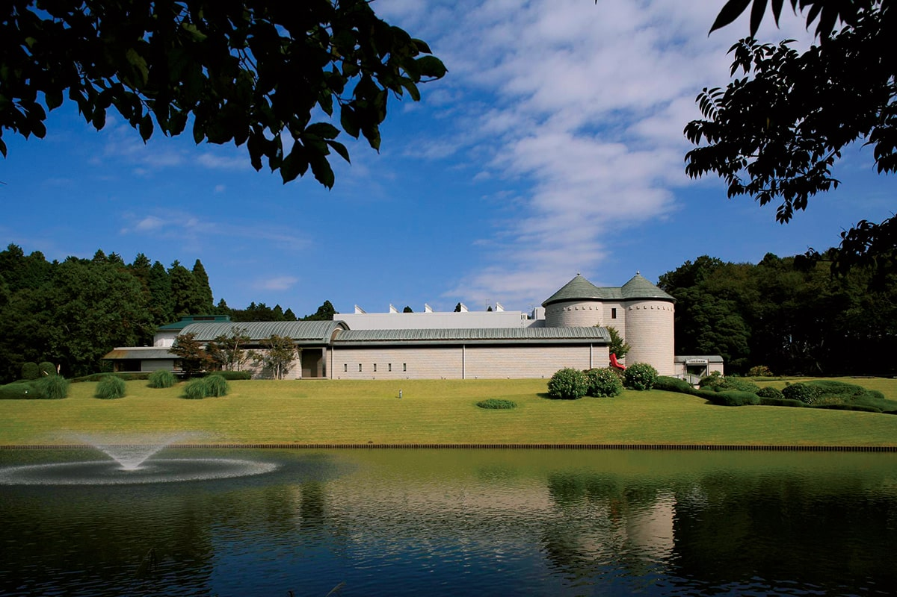
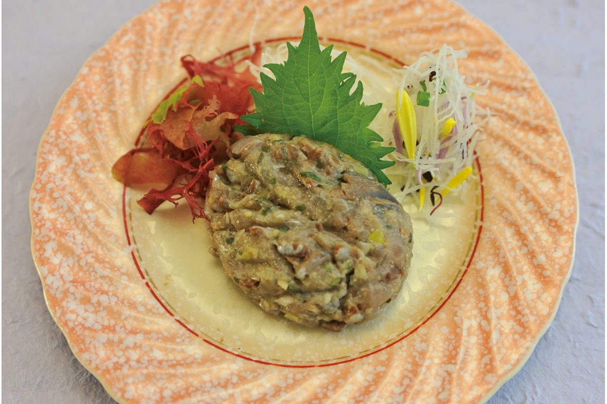
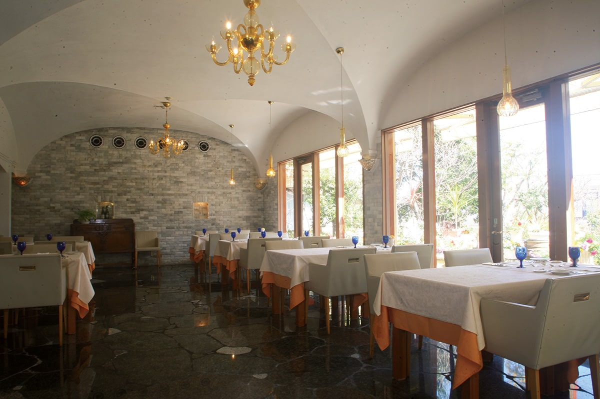
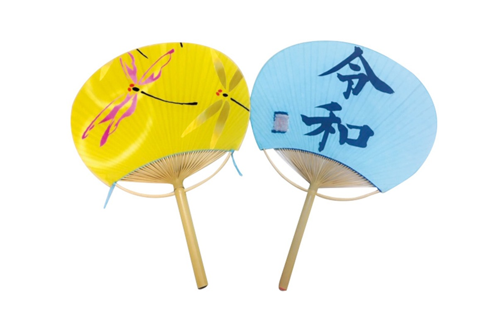
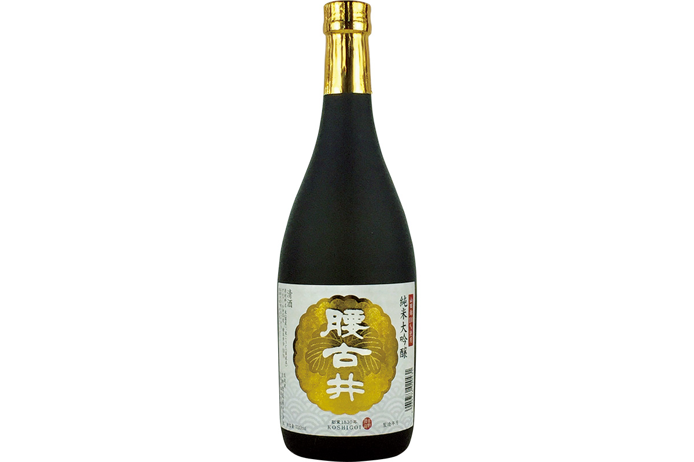
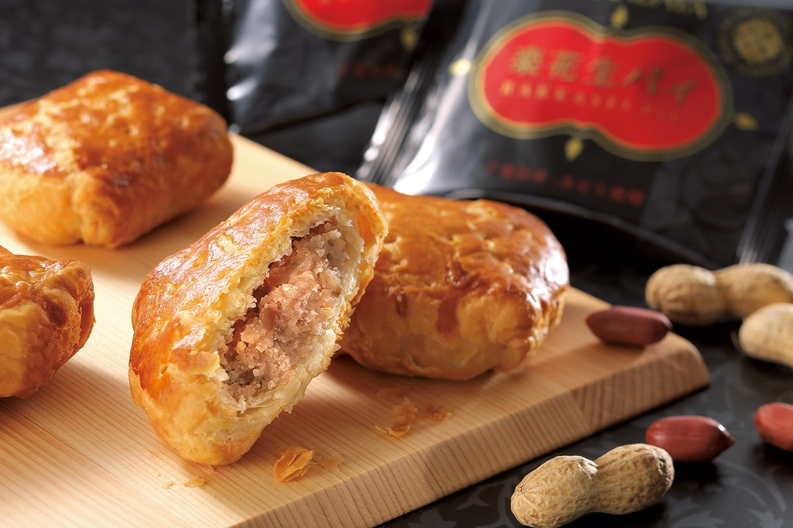
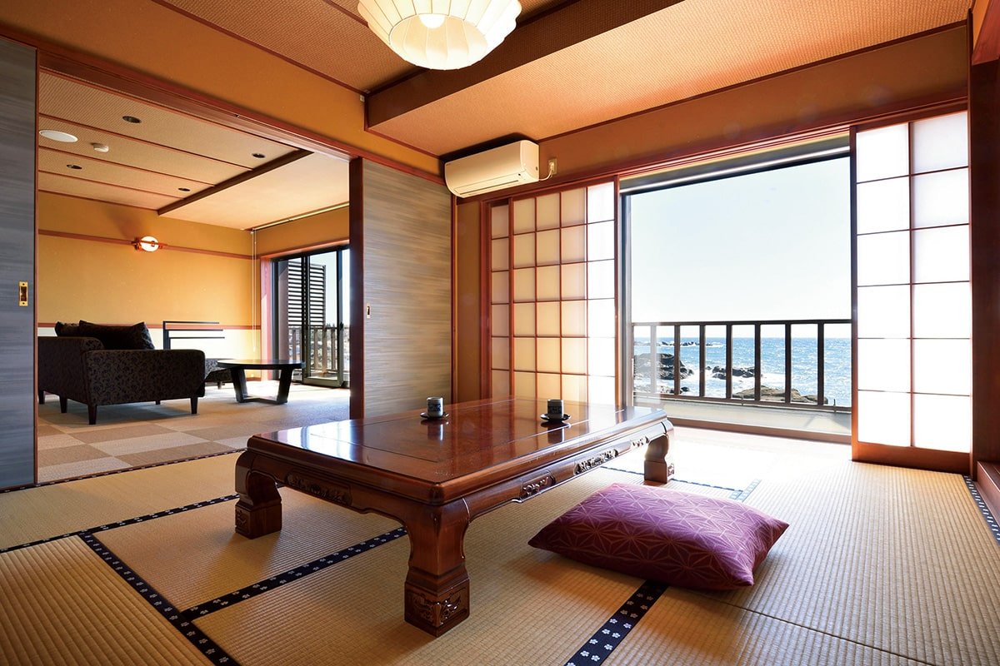

Префектура Тиба
Тиба: гора-пила, арахис и веера из бамбука

Смотровая площадка «Дзигоку-но-дзоки», то есть «взгляд в ад», выступает с обрыва горы Нокогирияма, а под ней до горизонта тянутся зелёные холмы полуострова Босо
Гора с зазубренным хребтом и площадка над пропастью, праздник, ради которого в Нариту съезжается почти полмиллиона гостей, рыбацкая закуска из сырой рыбы и рёкан, из окон которого видно Тихий океан. Рассказываем, за чем ехать в префектуру Тиба.
О префектуре
Полуостров, который кормит всю столицу
Тиба лежит к востоку от Токио, на полуострове Босо, который вдаётся в Тихий океан. Море окружает его с трёх сторон, а сама префектура состоит из холмов Босо, довольно ровного плато Симоса и равнин в бассейне реки Тонэ и вдоль побережья Кудзюкури.
Когда-то здесь были три провинции: Ава, Кадзуса и Симоса, и название полуострова собрано из двух их названий. В эпоху Эдо, то есть с XVII века, эти земли ценились как ближние к правительству сёгунов: частью они принадлежали ему напрямую, частью доставались его вассалам. Самым крупным было княжество Сакура с замком Сакура, который считался одной из крепостей, прикрывавших Эдо, и с городом при замке.
Зимы здесь тёплые, лето нежаркое, климат морской и мягкий, поэтому здесь хорошо развиты сельское хозяйство и рыболовство, и Тибу называют кухней столичного региона. При этом рядом с Токио хватает и природы, и развлечений: в парках Токийского Дисней-ризорта, то есть Disneyland и DisneySea, всегда полно гостей, а международный аэропорт Нарита, главные воздушные ворота страны, принимает рейсы со всего мира.
Что посмотреть
Гора-пила и площадка над пропастью
Гора Нокогирияма
Нокогирияма переводится как «гора-пила»: гребень у горы зазубрен, как зубья пилы. С вершины открывается панорама на десятки километров, а у самого обрыва выступает смотровая площадка «Дзигоку-но-дзоки»: стоять на ней и смотреть в долину внизу решаются не все.
- Справки
- храм Нихондзи на горе Нокогирияма
- Телефон
- +81 470-55-1103
Что ещё посмотреть
- Умихотару, парковочная зона на искусственном острове посреди Токийского залива
- Наритасан Синсёдзи, старинный буддийский храм, и улица Омотэсандо, которая ведёт к его воротам
- Касори кайдзука, ракушечная насыпь эпохи Дзёмон, то есть древнейшего периода истории Японии
Праздники
Три дня повозок и барабанов в Нарите
Праздник Гион в Нарите
Имя празднику дал квартал Гион в Киото, где родилась эта традиция, и сами шествия когда-то устраивали, чтобы молиться об избавлении от эпидемий. В Нарите Гион встречают около 450 000 гостей. По улицам выходят десять богато украшенных повозок и один микоси, то есть переносное святилище, которое участники несут на плечах. Три дня подряд процессия обходит улицу Омотэсандо у храма Наритасан и окрестные кварталы.

- Когда
- каждый год в ближайшие к 7, 8 и 9 июля пятницу, субботу и воскресенье
- Место
- 1 Narita, Narita, Chiba, храм Наритасан Синсёдзи и улица Омотэсандо
Другие праздники
- Танабата в Мобаре, летний праздник в честь встречи двух звёзд, когда улицы города украшают праздничными фигурами
- Большой праздник в Саваре, шествие старинных повозок, которое ЮНЕСКО внесла в список нематериального наследия
- Праздник в Охаре, во время которого участники входят с микоси прямо в морскую воду
Музеи и архитектура
Музей в белом замке посреди леса
Мемориальный музей искусств DIC Кавамура
Коллекция строится вокруг искусства XX века, и смотреть её можно не только в залах: музей окружён парком площадью около десяти гектаров, где среди деревьев расставлены скульптуры под открытым небом.

- Адрес
- 631 Sakado, Sakura, Chiba
- Телефон
- +81 50-5541-8600 (единая справочная служба)
Что ещё посмотреть
- Городской музей искусств Тибы в самом центре города
- Художественный музей префектуры Тиба
- Музей Хоки, первый в Японии музей реалистической живописи
Местная кухня
Закуска, за которую не стыдно облизать тарелку
Намэро
Намэро, то есть «облизать до самой тарелки», это блюдо рыбаков: ставриду или сардину рубят ножом вместе с соевой пастой мисо, зелёным луком и другой ароматной зеленью. Считается, что оторваться от намэро невозможно.

Что ещё попробовать
- Такомэси, рис, сваренный вместе с осьминогом
- Футомаки, толстые суши-рулеты с начинкой из нескольких слоёв
- Суп дангодзиру с фрикадельками из сардины
Где поесть
Итальянская кухня в усадьбе среди зелени
Ristorante Castello
Ресторан занимает увитый зеленью особняк: здесь готовят итальянскую кухню по правилам, привезённым из Италии, а в погребе всегда хранится не меньше четырёх тысяч бутылок вина. Напротив дома разбит свой огород, где для кухни выращивают овощи и травы.

- Адрес
- 1567-2 Usui, Sakura, Chiba
- Телефон
- +81 43-489-8951
- Часы
- с 11:30 до 15:30 (последний заказ в 14:30) и с 17:30 до 22:30 (последний заказ в 21:00)
- Выходной
- среда
Ремёсла
Веер из цельного ствола бамбука
Утива босю
Утива это японский круглый веер, а босю значит «полуостров Босо». Утива босю делают в южной части полуострова из целого ствола бамбука: его круглая часть становится ручкой, а дальше ствол делится от 48 до 64 тонких спиц, которые связывают нитью в полукруг с решётчатым окошком.

- Справки
- отдел торговли и туризма города Минамибосо
- Телефон
- +81 470-33-1092
- Сайт
- bosyu-uchiwa.com
Что привезти
Бутылка сакэ и пирог с арахисом
Сакэ «Косигои» дзюммай дайгиндзё
Косигои это марка сакэ от сакеварни Ёсино в Тибе, а дзюммай дайгиндзё, высшая категория сакэ, которое делают только из риса, воды и закваски, без добавления спирта. Здесь берут рис ямада-нисики из префектуры Хёго, лучший сорт для сакэ, и бродят его при низкой температуре, поэтому аромат получается утончённым, а вкус лёгким.

- Цена
- 2750 иен за 720 мл
- Телефон
- +81 470-76-0215
- Сайт
- koshigoi.com
Пирог с арахисом от «Орандая»
Кондитерская «Орандая», название которой переводится как «голландский дом», начиняет пирожное пастой ан, то есть сладкой пастой из бобов, в которую добавлен сваренный в сиропе арахис из Тибы.

- Цена
- 172 иены за штуку
- Телефон
- +81 120-063-065 (только для заказов по почте)
- Сайт
- orandaya.net
Где остановиться
Рёкан, из окон которого видно океан
Монъя
Монъя это рёкан, то есть японская гостиница с циновками татами и собственным горячим источником. Гостиница стоит прямо на берегу: все номера выходят окнами на Тихий океан, а для гостей с маленькими детьми здесь продумали отдельные удобства, поэтому сюда часто приезжают семьями.

- Адрес
- 232 Shirahama, Shirahama-cho, Minamiboso, Chiba
- Телефон
- +81 470-38-3151
- Номеров
- 25
- Цена
- от 14 000 иен за ночь с завтраком и ужином, без налога
- Сайт
- monya.co.jp
Местный диалект
Как здесь хвалят еду и жалуются на солнце
- Эрээ, умэйнааНу очень вкусно
- Тайёо га хидэбусииСолнце слепит
- Оппэсудэ нээ оо!Не толкайтесь!
Рекорды
Три первых места страны
- №1 по сбору арахиса
- №1 по производству соевого соуса
- №1 по высоте пешеходного моста: это мост Наканосима в городе Тиба
Вопросы и ответы
Проверьте себя
Какое лакомство придумали сотрудники железной дороги в Тёси?
Нюрэ-сэмбэй, влажное рисовое печенье. Его придумали как побочный заработок, когда частная железная дорога города Тёси оказалась на грани разорения. Соус для печенья делают на «Ямасе», самой известной соусной фирме города. Вслед за печеньем появились и другие сувениры, например «Мадзуй-бо», название которого переводится как «невкусная палочка».
Какой фрукт здесь выращивают больше всех в стране?
Грушу. Тёплый климат и почвы из вулканического пепла подходят ей как нельзя лучше. В префектуре растят шесть основных сортов, среди них Косуи, Хосуи и Нидзиссэйки, то есть «двадцатый век». Урожай собирают с конца июля до середины октября.
Справочник
Тиба в цифрах
Общие данные
| Административный центр | Тиба |
| Муниципалитеты | 37 городов, 16 посёлков и 1 село |
| Площадь | 5158 км² |
| Население | 6,26 млн человек |
| Плотность населения | 1218 чел./км² |
| Туристов в год | 71,73 млн |
| Символ-дерево | подокарпус |
| Символ-цветок | цветы рапса |
| Символ-птица | овсянка |
Климат
| Средняя годовая температура | 17,2 °C |
| Средний максимум | 32,2 °C |
| Средний минимум | 1,8 °C |
| Осадки | 1261 мм в год |
| Ясных дней | 30 |
| Дней с осадками | 96 |
| Дней со снегом | 17 |
Для путешественника
| Горячих источников | 86 |
| Отелей и рёканов | 1293 |
| Художественных музеев | 8 |
| Музеев | 36 |
| Придорожных станций митиноэки | 29 |
| Объектов культурного наследия | 85, из них 4 национальных сокровища |
| Национальные сокровища | бронзовое зеркало с лозой и морскими зверями из святилища Катори и другие |
| Исторических памятников | 30 |
| Живописных мест | 4 |
| Памятников природы | 19 |
| Наследие ЮНЕСКО | шествия с праздничными повозками, в том числе шествие повозок в Саваре |
| Национальные и квазинациональные парки | Минамибосо и Суйго Цукуба, всего 2 |
Природные памятники
Рыбка миякотанаго, тысячествольный гинкго, ракушечный слой Киносита, огромное камфорное дерево в Кандзаки, гигантская криптомерия в Сэйтё, обрывы Бёбугаура и другие.